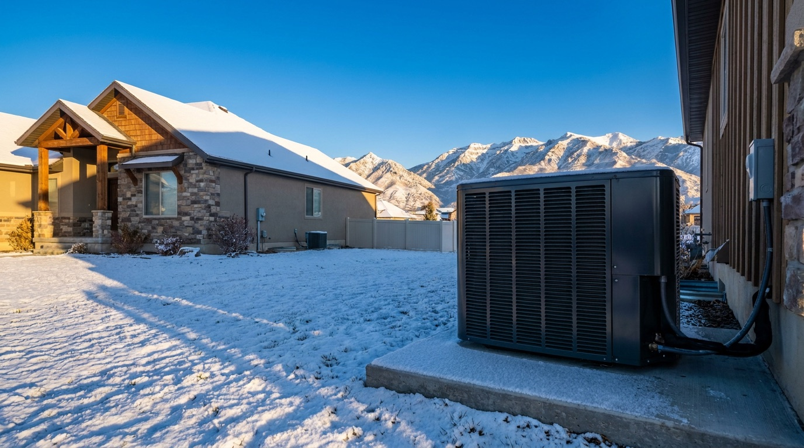
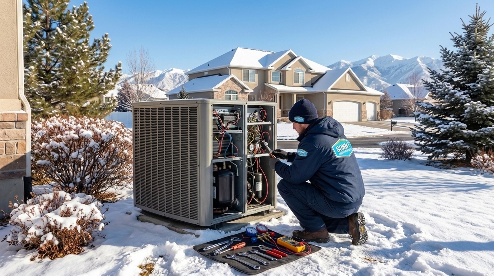

801.887.9650


Utah homeowners deal with a real range of weather, and a single system that handles both summer heat and winter cold makes a lot of sense here. Sunny Home Services offers heat pump installation in West Jordan along with heat pump repair, maintenance, and emergency support for every make and model, backed by upfront pricing and same-day availability across the Wasatch Front.

Heat pumps are becoming one of the most popular upgrades for West Jordan homes, and the reasons are practical. A modern heat pump can do the work of both a furnace and an air conditioner, which matters in a city that sees July highs push into the mid-90s while January lows regularly dip into the 20s.
West Jordan’s semi-arid climate generally reduces the humidity-related cooling load common in many other regions. Combined with modern cold-climate heat pump technology, these conditions make heat pumps an effective year-round option for many Wasatch Front homes.
A significant share of West Jordan’s housing was built between the 1970s and early 2000s. Many homes are still running aging split systems or gas furnaces that were installed before modern efficiency standards took hold. Replacing an older HVAC system with a properly sized high-efficiency heat pump can significantly reduce overall energy use, particularly when replacing older electric resistance heating or aging, inefficient equipment.
Upgrading to a heat pump is one of the more practical investments a West Jordan homeowner can make, given the year-round heating and cooling demands of the Wasatch Front.
After the switch, many homeowners experience:

Heat pump installation in West Jordan starts with a proper load calculation, not a guess. Sunny’s technicians use Manual J® calculations to size every system to the actual square footage, insulation levels, and window layout of your home. Whether you’re doing a heat pump replacement or installing a new system for the first time, the process is the same: thorough, documented, and done right.
Mechanical permits are obtained through the appropriate local permitting authority when required. Sunny Home Services handles the permitting process from start to finish, so homeowners don’t have to manage the paperwork themselves.
When your system stops working in July or in the middle of a January cold snap, fast heat pump repair in West Jordan, UT is the standard we hold ourselves to. Routine heat pump service helps to improve efficiency, extend equipment life, and reduce unexpected repairs.
West Jordan’s dry, dusty conditions, particularly in neighborhoods near the Jordan River Parkway and areas with open desert exposure to the south and west, accelerate filter loading and coil fouling more than homeowners expect. Neglected maintenance is the most common cause of heat pump repair calls we see, and it’s largely preventable.
Heat pump repair calls we handle regularly include refrigerant leaks, reversing valve failures, defrost control malfunctions, and capacitor or contactor issues. For urgent situations, Sunny offers 24/7 emergency heat pump repair with no overtime charges for Family Plan members.
Heat pump systems in West Jordan benefit from twice-yearly servicing, once before cooling season and once before heating season, given the genuine demand the system sees on both ends. Sunny’s Family Plan offers both tune-ups annually starting at $19 per month with no contracts, along with 15% off repairs and priority scheduling.

Heat pump installation in Utah comes with real financial incentives. The federal Inflation Reduction Act offers a tax credit of up to 30% on qualifying heat pump installations through 2032, with an annual cap of $2,000. Utah homeowners may also qualify for rebates through Rocky Mountain Power’s wattsmart program, which offers incentives for high-efficiency HVAC equipment.
Sunny offers financing options for qualified homeowners, so you can get the right system now and spread the cost over time. We walk through available incentives with every customer before installation so nothing gets left on the table.
When it comes to heat pump contractors in West Jordan, Sunny Home Services stands apart. Homeowners trust Sunny Home Services because we have:

Whether you’re replacing an old furnace, adding cooling capacity, or dealing with a system that stopped working overnight, Sunny is ready to help. Contact us to book a free in-home assessment, get a flat-rate quote on a new installation, or put a heat pump repair on the calendar. Our team is straightforward to work with, easy to reach, and genuinely invested in getting your home comfortable again.